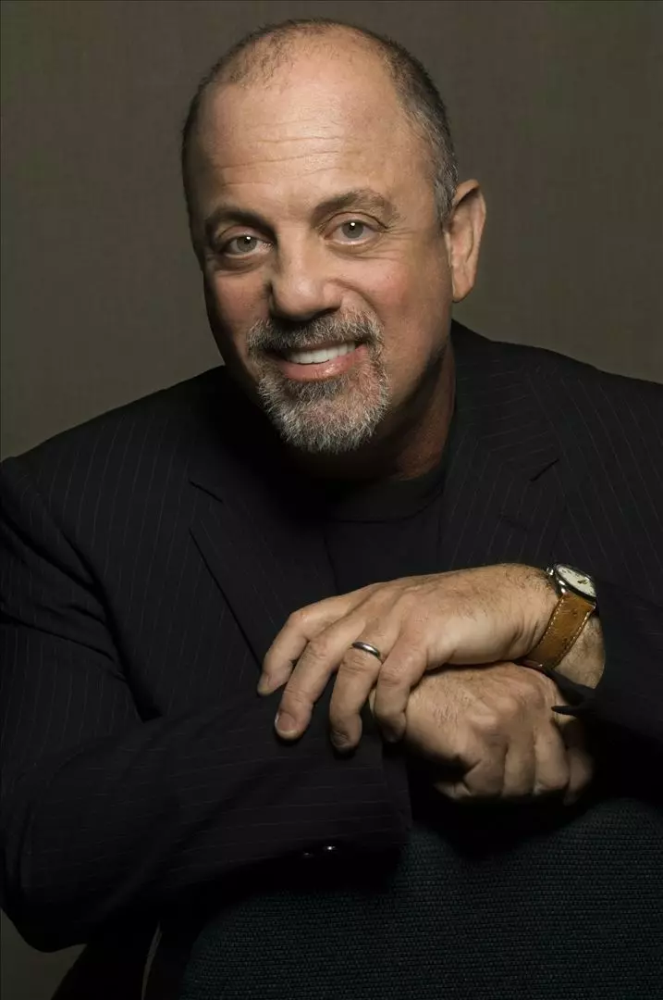

Music at JavaJam
The first Friday night each month at JavaJam is a special night. Join us from 8pm to 11pm for some music you won't want to miss.
| JANUARY | |
|
Stevie Nicks entertains with her melodic folk style. |
|
| FEBRUARY | |
|  |
Billy Joel is back from his tour. |